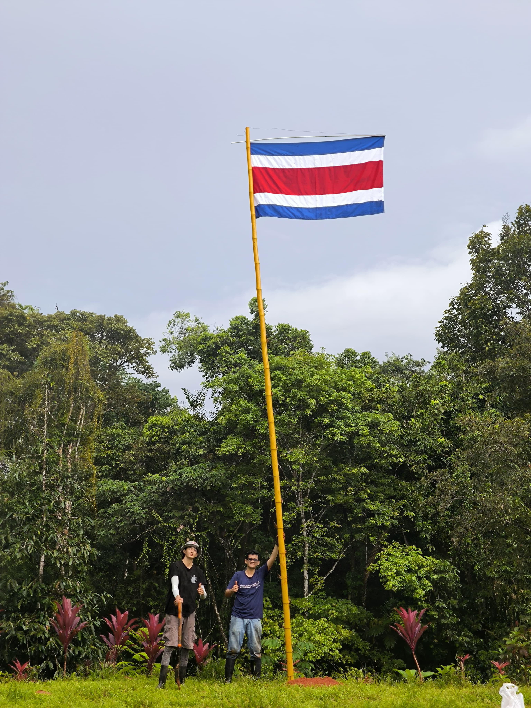

Welcome to Ecos del Bosque Reserve
N 9,0824163 / W 83,6224764
This is a temporary website a new website launching in
Ecos del Bosque Natural Wildlife Reserve
Welcome to Ecos del Bosque Natural Wildlife Reserve, a sanctuary where nature and tranquility converge. Nestled in lush greenery, our reserve offers a unique experience to explore diverse ecosystems, encounter wildlife, and rejuvenate in harmony with nature.
This privileged biodiverse reserve spans across 32 acres of primary forest, where 6 km of trails extend under lush primal vegetation, untouched by humans.
Thereof, it offers a one-of-a-kind connection with our natural elements.
Guests often describe it as a place to feel at peace and feel each heartbeat.
Discover serene trails, vibrant landscapes, and immersive activities that highlight the beauty and importance of conservation in the Osa.
The Osa
As the biological bridge between North and South America, Osa is a unique haven of biodiversity.
This lush paradise boasts a staggering 5% of the world's plant and animal species, making it a must-visit for nature enthusiasts. Beyond its breathtaking landscapes, Osa holds centuries-old secrets rooted in indigenous traditions.
Explore trails, learn about local cultures, and immerse yourself in the rich natural history of this extraordinary region.
Ready to experience the magic of Osa? Check out our tours that will bring you closer to nature and its wonders.
We strongly advise reading this article: Costa Rica: ‘the most biologically intense place on Earth’.
GALLERY


TOURS

Self-guided Walk
Traverse winding trails under the canopy of towering trees, with opportunities to spot colorful toucans, monkeys, trogons, tangaras, woodcreepers, and other wildlife unique to this tropical paradise.
Each step brings a new experience, from serene streams to captivating flora, allowing for quiet reflection or a chance to learn about the intricate ecosystems thriving around you.
Entrance Price: $10 per person. Pay on arrival. Max 50 persons per day; save your space via WhatsApp.
Duration: Minimum 1 hour, maximum as long as you want to stay. See Map Here
Opening Time: 7 AM
Closing Time: 4 PM

Natural History Hike and Early Birding
Traverse picturesque trails with experienced guides who share fascinating insights into the flora and fauna. Learn about the region's first settlers, indigenous peoples, and archeological discoveries.
From ancient trees to vibrant wildflowers, you’ll witness the interdependence of ecosystems and the importance of conservation. Be prepared for wildlife sightings of birds, mammals, and more.
Whether you’re a nature enthusiast or just seeking a day outdoors, this hike promises a memorable experience for all!
Price: $50 per person, includes snacks, cookies, fruits, water, coffee, and natural orange juice. With lunch $70.
Duration: 2.5 to 3 hours
Start Times: 6 AM. 3.30 PM.
Operation:Minimum 2 people, max 8 people.
Farm Tour and Natural Medicine
Explore vibrant fields and learn about organic farming practices that promote environmental health.
Walk through the farm with our knowledgeable guides as they introduce you to medicinal plants, explaining their traditional uses and benefits. Gain insights into herbal remedies, natural healing techniques, and the importance of biodiversity.
This tour offers a unique opportunity to connect with nature, understand the origins of natural medicine, and appreciate the art of farming.
Whether you're an experienced herbalist or simply curious, this experience will inspire and inform you.
Price: $35 per person. Free pass for a self-guided walk.
Duration: 1.5 hours
Start Time: 8 AM
Minimum: 2 people, Maximum: 10 people
Secret Waterfall
This exclusive tour takes you off the beaten path, where you’ll discover stunning landscapes and the soothing sounds of cascading water.
Trek through the vibrant rainforest, while our expert guides share stories about the unique flora and fauna you encounter. Once at the Secret Waterfall, relax and soak in the breathtaking views, or dip your toes in the cool, refreshing waters.
This unforgettable adventure is perfect for nature lovers, photographers, or anyone seeking a peaceful escape into nature’s beauty.
Price: $40 per person, includes snacks, fruits, cookies, orange juice, and coffee.
Extra with Lunch: $60, includes a visit to the Tilapia Restaurant nearby and a tour on aquaculture.
Duration: 2 hours
Start Time: 11 AM (One scheduled time per day)
Minimum: 2 people, Maximum: 10 people
ONLY ENTRANCE: $10.
COMBO TOURS
Natural History Hike + Farm Tour and Natural Medicine
PRICE: $100 per person. Lunch and Snacks included (coffee, juice, cookies, fruits, water).
DURATION: 4 hours
Start Times: 8 AM.
Minimum 4 people, Maximum 10 people.
Book Here!
Natural History Hike + Visit to the Hidden Waterfall
PRICE: $90 per person. Lunch and Snacks included (coffee, juice, cookies, fruits, water).
DURATION: 4.5 hours
Start Times: 9 AM.
Minimum 4 people, Maximum 10 people.
Book Here!
ABOUT
At Ecos del Bosque Natural Wildlife Reserve, we are dedicated to preserving the unique beauty and biodiversity of the Osa. Our reserve is more than just a destination—it is a sanctuary where nature and people come together to learn, explore, and thrive.
Our mission is to foster a deep connection between visitors and the natural world, emphasizing the importance of conservation and sustainability. We believe that by nurturing our environment, we nurture ourselves. Every aspect of our reserve is designed to inspire appreciation for the incredible ecosystems that surround us—from vibrant flora to the diverse wildlife that calls this place home.
With a strong commitment to education and community engagement, we offer immersive experiences that highlight the rich heritage of the region and the vital role each of us plays in protecting our planet. Whether you're hiking through lush trails, observing unique wildlife, or simply enjoying the serenity of the landscape, Ecos del Bosque Reserve invites you to discover the wonders of nature and your place within it.
Join us in celebrating the beauty of the natural world and help us create a sustainable future for generations to come!
TEAM
Sebastian and Francisco are two dedicated costarican naturalists leading the reserve project. They work on the development of sustainable farming development, documentation of species, restoration of the habitats and educational tours. From the shrublands to the deep rainforest, they know everything about the place and they are ready to share the natural wonders you.

Sebastian and Francisco, December 21st, 2024.
Chat with us
Contact Us
Email: infoecosdelbosque@gmail.com
Phone / WhatsApp: +506 6357 6163
Our Location
Address: Vergel de Punta Mala, 200 meters north of Restaurante Tilapias El Pavón.
Hours: Open Saturdays and Sundays, from 6 AM to 4 PM (public access).
Getting Here
- Set your destination to "Tilapias El Pavón." Drive past the restaurant for 300 meters until you reach Rio Tico Safari Lodge.
- Continue straight for another 200 meters until you see a green gate.
- Park near the bamboo area and cross the green bridge to enter.
Important: Avoid taking the right turn in front of Rio Tico. If lost, visit El Pavón Restaurant for assistance.